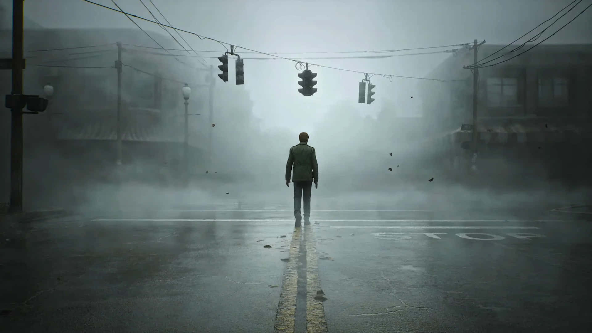

Silent Hill 2 Remake
Foi lançado em 08 de outubro de 2024 para PlayStation 5 e PC. Trata-se de um remake do jogo homônimo de 2001 e é o primeiro grande lançamento da franquia Silent Hill desde Silent Hill: Downpour em 2012.
O remake de Silent Hill 2 foi anunciado oficialmente em outubro de 2022, após meses de especulações e vazamentos. Foi liderado pelo diretor criativo da Bloober Team, Mateusz Lenart, e produzido por Motoi Okamoto da Konami. Masahiro Ito e Akira Yamaoka, que atuaram como designer de criaturas e compositor do jogo original, respectivamente, participaram ativamente do desenvolvimento. De acordo com Maciej Głomb, Ito forneceu arte conceitual para locações e monstros, enquanto Yamaoka retornou como compositor.
O jogo segue James Sunderland, que viaja para a cidade de Silent Hill depois de receber uma carta de sua falecida esposa dizendo-lhe que ela está esperando por ele em seu "lugar especial".